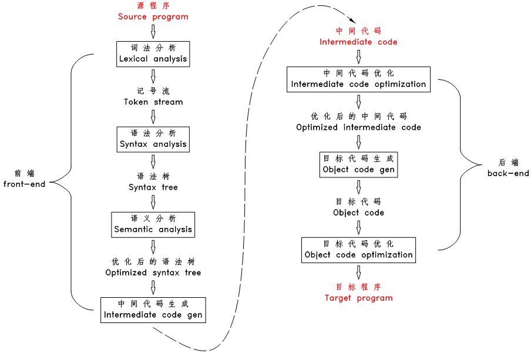
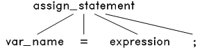
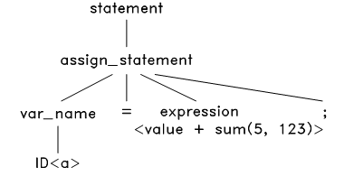
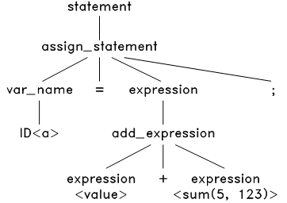
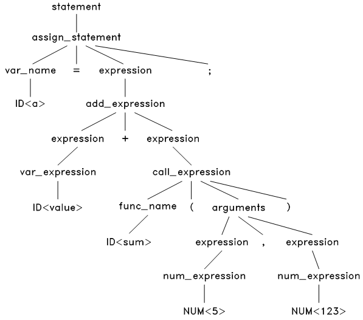
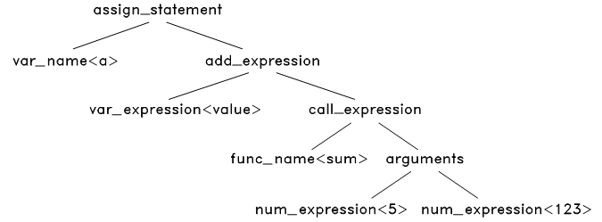
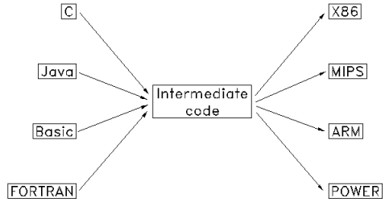
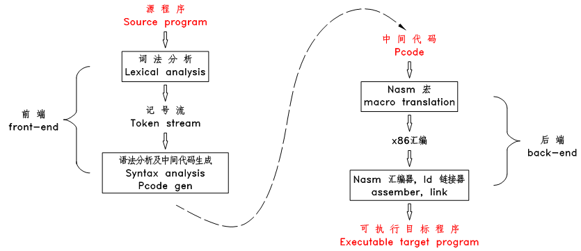

前面我们一共花了 4 章的内容详细介绍了 TinyC 编译器的源程序和中间代码，看起来我们似乎离我们的主题——编译原理——越来越远了。但只有深入的理解了源程序和中间代码的结构，才有可能编制出计算机程序进行编译。经过这 4 章的学习和练习，相信读者心中对 TinyC 前端的内部算法已经有了一个比较模糊的框框了，但要真正做出这个框框，仍然是相当之难的。从这一章开始，我们回到主题。
编译器是将一种程序语言（源程序：source language）翻译为另一种程序语言（目标程序：target language）的计算机程序。一般来说，源程序为高级语言，而目标语言则是汇编语言或机器码。
早期的计算机程序员们用机器码写程序，编程十分耗时耗力，也非常容易出错，很快程序员们发明了汇编语言，提高了编程的速度和准确度，但编写起来还是不容易，且程序严格依赖于特定的机器，很难移植和重复利用。
上世纪50～60年代，第一批高级语言及编译器被开发出来，程序的文法非常接近于数学公式以及自然语言，使得编写、阅读和维护程序的难度大为降低，程序编制的速度、规模和稳定性都有了质的飞跃。
可以说是编译器的产生带来了计算机行业的飞跃发展，所以开发编译器是非常有必要的。
先让我们回忆一下我们在上一章中是如何手工将源程序翻译成中间代码的，想一想翻译的第一步是什么？第一步是我们的人脑要理解源程序，理解源程序的结构，理解源程序的含义、作用，然后才能根据我们的理解进行翻译。
要让计算机将源程序翻译成目标程序，我们也要让计算机真正的理解源程序，让计算机分析出源程序的结构，将源程序由一串无意义的字符流解析为一个个的有特定含义的构件，将这些构件进行转换后，再按特定的规则和顺序将转换后的构件拼装成目标程序。
编译器的工作流程见下图：
图6.1 编译器工作流程
编译器的工作流程简要描述如下：
- 对源文件进行扫描，将源文件的字符流拆分分一个个的词（记号），此为词法分析
- 根据语法规则将这些记号构造出语法树，此为语法分析
- 对语法树的各个节点之间的关系进行检查，检查语义规则是否被违背，同时对语法树进行必要的优化，此为语义分析
- 遍历语法树的节点，将各节点转化为中间代码，并按特定的顺序拼装起来，此为中间代码生成
- 对中间代码进行优化
- 将中间代码转化为目标代码
- 对目标代码进行优化，生成最终的目标程序
以上阶段划分仅仅是示意性的，实际的编译器中，上面说的这些阶段经常组合在一起，但将这些阶段设想为编译器中一个个单独的片断是对于我们理解编译器的工作流程是非常有用的，且对于编译器设计的模块化也是非常有利的。
下面再以简单的例子来形象一点的说明以上工作流程：
（1） 词法分析
编译器扫描源文件的字符流，过滤掉字符流中的空格、注释等，并将其分割为一个个的词（或称为记号、token，下文中都将称为 token ）。例如下面的语句：
a = value + sum(5, 123);
将被拆分为11个 token ：
a 标识符
= 赋值运算符
value 标识符
+ 加号
sum 标识符
( 左括号
5 整数
, 逗号
123 整数
) 右括号
; 分号
（2） 语法分析
词法分析完成后，上面的字符流就被转换为 token 流了：
ID<a> '=' ID<value> '+' ID<sum> '(' NUM<5> ',' NUM<123> ')' ';'
上面的 ID<a> 表示这一个标识符类型的 token ，其内容为 a。
接下来，根据语言的语法规则来解析这个 token 流。首先，这是一个语句。而TinyC 中只有四种语句：赋值语句，函数调用语句， if 语句和 while 语句。把这四种语句的语法结构和这个 token 流对比一下发现只有赋值语句的结构才能和它匹配：
图6.2 赋值语句的语法结构树
于是将此语法结构应用到 token 流上，把源程序的等号两边的内容分别放在该语法结构树的对应节点上，生成语法树如下：
图6.3 语法解析第1步
接下来，对这个语法树上的 expresion<value + sum(5, 123)> 进行解析。TinyC中的表达式有很多种，包括：变量表达式、数字表达式、加法表达式、减法表达式等等。经过对比，发现只有加法表达式的结构才能匹配这个 <value + sum(5, 123)>，于是将加法表达式的语法结构应用到此表达式上，生成：
图6.4 语法解析第2步
然后，解析这个语法树上的 <value> 和 <sum(5, 123> ，经过对比，发现只有变量表达式和函数调用表达式的结构能匹配成功，应用后，得到：
图6.5 语法解析第3步
这个语法树中，有些节点是可以去掉的，如 assign expression 中的 ‘=’ 和 ‘;’ ，既然我们已经知道这是一个赋值表达式，那么这两个节点是不必要的了，我们去掉这样的节点，同时对语法树进一步浓缩，可以得到最终的抽象语法树：
图6.6 语法解析第4步
可以看出，语法分析的过程就是不断的将语法规则应用于源程序，将源程序 解析 成一颗抽象语法树。
语法分析可以说是编译器中最基础的一步，它将人可以理解的语法规则转换成计算机可以 “理解” 的树形结构，之后的语义分析、代码生成甚至代码优化都是基于对这个抽象树进行遍历、检查和修改优化的操作上进行的。
（3） 语义分析
语义分析阶段，编译器开始对语法树进行一次或多次的遍历，检查程序的语义规则。主要包括声明检查和类型检查，如上一个赋值语句中，就需要检查：
- 语句中的变量 a 和 value 、函数 sum 是否被声明过
- sum 函数的参数数量和类型是否与其声明的参数数量及类型匹配
- 加号运算的两个操作数的类型是否匹配（sum 函数的返回值类型是否和变量 value 匹配）
- 赋值运算符两边的操作数的类型是否匹配
语义检查的步骤和人对源代码的阅读和理解的步骤差不多，一般都是在遍历语法树的过程中，遇到变量声明和函数声明时，则将变量名——类型、函数名——返回类型——参数数量及类型等信息保存到符号表里，当遇到使用变量和函数的地方，则根据名称在符号表中查找和检查，查找该名称是否被声明过，该名称的类型是否被正确的使用等等。显然，对于有些变量和函数的声明可以放在其使用位置的后面的语言（比如 java ），语义检查至少需要对语法树进行 2 次遍历。
语义检查时，也会对语法树进行一些优化，比如将只含常量的表达式先计算出来，如：
a = 1 + 2 * 9;
会被优化成：
a = 19;
语义分析完成后，源程序的结构解析完成，所有编译期错误都已被排除，所有使用到的变量名和函数名都绑定到其声明位置（地址）了，至此编译器可以说是真正理解了源程序，可以开始进行代码生成和代码优化了。
（4） 中间代码生成
一般的编译器并不直接生成目标代码，而是先生成某种中间代码，然后再生成目标代码。
之所以先生成中间代码，一个是为了降低编译器开发的难度，从第 4 章中对 Pcode 的总结中可以看到，对于这种既有部分高级语言特性、又有接近机器语言操作的中间代码，将高级语言翻译成中间代码、将此中间代码再翻译成目标代码的难度都比直接将高级语言翻译成目标代码的难度要低。
第二个原因是是为了增加编译器的模块化、可移植性和可扩展性，一般来说，中间代码既独立于任何高级语言，也独立于任何目标机器架构，这就为开发出适应性广泛的编译器提供了媒介。如下图中，可以通过编写 m + n 个编译模块而获得 m * n 种编译器。
图6.7 编译模块示意图
第三个原因是为了代码优化，一般来说，计算机直接生成的代码比人手写的汇编要庞大、重复很多，计算机科学家们对一些具有固定格式的中间代码（最典型的是三地址中间码）的进行大量的研究工作，提出了很多广泛应用的、效率非常高的优化算法，可以对中间代码进行优化，比直接对目标代码进行优化的效果要好很多。
下面以图6.6的语法树为例说明中间代码生成的方法，首先从根节点 assign_statement 开始：
GEN_CODE( assign_statement<a = value + sum(5, 123);> )
第5章的手工编译 TinyC 中已经介绍了，对于赋值语句，先将其右边的表达式翻译成 Pcode ，再在最后加一个 pop var_name 就可以了，如下：
GEN_CODE( add_expression<value + sum(5, 123)> )
pop a
对于加法表达式，将两个操作符翻译成 Pcode ，再加上 add ，如下：
GEN_CODE( var_expression<value> )
GEN_CODE( call_expression<sum(5, 123)> )
add
pop a
对于变量表达式，直接翻译成 push var_name ，对于函数调用表达式，将其参数翻译成 Pcode ，再加上 $func_name，如下：
push value
GEN_CODE( arguments<5, 123> )
$sum
add
pop a
最后将各参数翻译成 Pcode ，最终得到：
push value
push 5
push 123
$sum
add
pop a
对比一下手工翻译的结果，是不是完全一样？
从以上过程可以看出，代码生成的算法是一个递归的算法，递归的遍历语法树，将语法树上的一些节点替换成中间代码块，再根据特定的规则和顺序将这些中间代码块拼装起来。
（5） 中间代码优化
在本阶段，编译器对中间代码进行优化，尝试生成体积最小、最快、最有效率的代码。常见的优化方法有：
- 去除永远都不会被执行的代码区
- 去掉未被使用到的变量
- 优化循环体，将每次循环中的运行结果不变的语句移到循环的最外面
- 算术表达式优化，将乘 1 和 加 0 等操作去掉，将乘 2 优化成左移 1 位等
（6）目标代码生成
本阶段，编译器根据中间代码和目标机器架构生成目标代码，由于大部分中间代码接近低级语言，这一步的难度较低。比如 Pcode 中，很多 Pcode 命令可以用一组 x86 指令代替，如：
; ------------------------------------------------
; Pcode
push 3
; x86
PUSH DWORD 3
; ------------------------------------------------
; Pcode
push a
; x86
PUSH DWORD [EBP - 12] ; 假定a的地址为 EBP - 12
; ------------------------------------------------
; Pcode
add
; x86
POP EAX
ADD [ESP], EAX
注意以上代码中，Pcode命令全部小写，x86指令则全部大写，以区分二者中的同名命令，这将是本书采用的一个惯例。另外，本书中的x86仅指 32位 的x86。
（7）目标代码优化
本阶段，编译器利用目标机器的提供的特性对目标代码做进一步的优化，如利用 CPU 的流水线，利用 CPU 的多核等，生成最终的目标代码。
（8）编译过程的错误检查
在词法、语法和语义分析的过程中，都伴随着错误检查，词法错误主要是字符错误（如非法字符、未结束的注释、未结束的字符串等），语法错误主要是格式错误（如语句后未加分号、不匹配的括号等），最常发生的是语义错误（如变量名错误、表达式类型错误、函数参数不匹配等）。编译器不仅检查错误，还需要精确定位出错误发生的位置，协助编程人员修改。
错误检查和代码优化是编译器中两个很重要的步骤，也是最难实现的部分，前者定位出所有的编译期错误所在，协助程序员写出正确的程序，后者则保证生成高效的目标程序，这两点是早期编译器获得广泛接受的基石。
（9）编译器的前端和后端
一般以中间代码为界，将编译器分为前端和后端，其中前端包括词法分析、语法分析、语义分析以及中间代码生成，后端包括中间代码优化、目标代码生成和目标代码优化。前端一般只依赖于源程序语言，独立于机器架构，而后端则只依赖于机器架构、独立于高级语言。
（10）编译器的遍数
从词法分析到语法分析生成语法树一般只需要对源文件进行一遍扫描就可以了，生成语法树后，语义检查、代码优化的过程中可能需要对语法树进行反复的遍历，5 、 6 遍，甚至 8 遍都是有可能的。但有些语言（如 C 语言）也可能 1 遍就编译完成，其语义检查和代码生成可以在语法分析的同时同步进行，此时一般无任何代码优化。
TinyC 编译器是一个非常 “tiny” 的编译器，仅保留了编译器中最基本的功能，只保留了词法分析、语法分析、中间代码生成以及目标代码生成，其中中间代码是在语法分析的过程中同步进行的，TinyC 编译器的工作流程如下：
图6.8 TinyC 编译器的工作流程
从下一章开始，本站将从词法分析开始，一步一步的介绍 TinyC 编译器的实现。
本章以及后面的第 07 ～ 13 章的内容大量的参考了 stanford 的编译原理网络教程的内容，其网址为：
TinyC 编译器也是本人在自学该教程的过程中编写的，在此特别向 stanford 以及编制此教程的 Keith Schwarz, Narant Bayanbat, Jinchao Ye, Maggie Johnson, Julie Zelenski 等人致谢。
第 6 章完
{kind=link}
{kind=link}
{kind=link}
{kind=link}
{kind=link}
{kind=link}
{kind=link}
{kind=link}